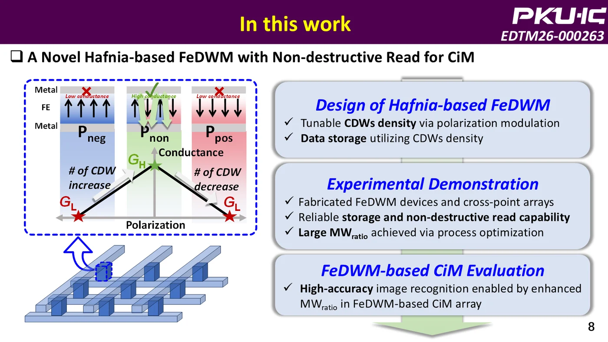

Novel Hafnia-based Ferroelectric Domain Wall Memory with Improved Memory Window and Non-destructive Read for High-Accuracy In-Memory Computing
IEEE Electron Devices Technology and Manufacturing Conference (EDTM), 2026.
This work demonstrates an HZO ferroelectric domain-wall memory that stores data using polarization-modulated conductive domain walls. The device supports 100 mV non-destructive read, a memory-window ratio above 3, read endurance above 109 cycles, and over 92% inference accuracy in an MLP simulation.